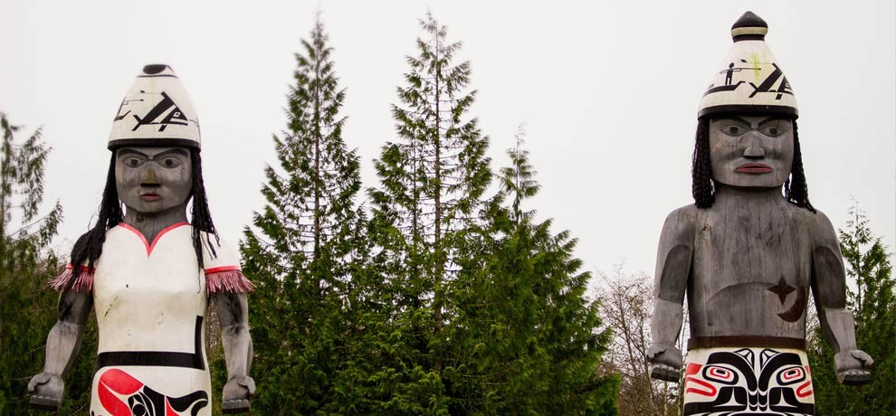

August 10, 2018
I really don't want to write this stupid blog anymore. Its been one of the worst weeks ever.
There has been a lot of people talking about our old tradition coming back. There's even news agencies coming to our homes.
They keep saying awful stuff and blowing stuff out of proportion. They make all of the people I grew up with look like the bad guys.
Kids at school are starting to bother us about it. Kai came home crying the other day.
Kai loves whales, he says the kids in class said we want to kill them all.
Dad says not tho listen to them. He says that our tribe has been Whalers for generations and that we have permission but people do not listen.
He worries that we won't be able to be who we are. That someday we will lose that part of our culture forever. I wish people could see that part too.
